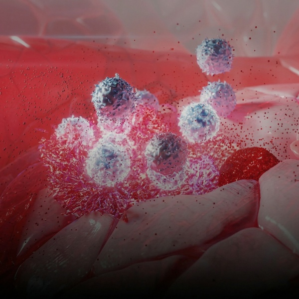
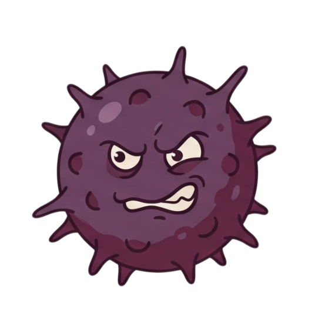
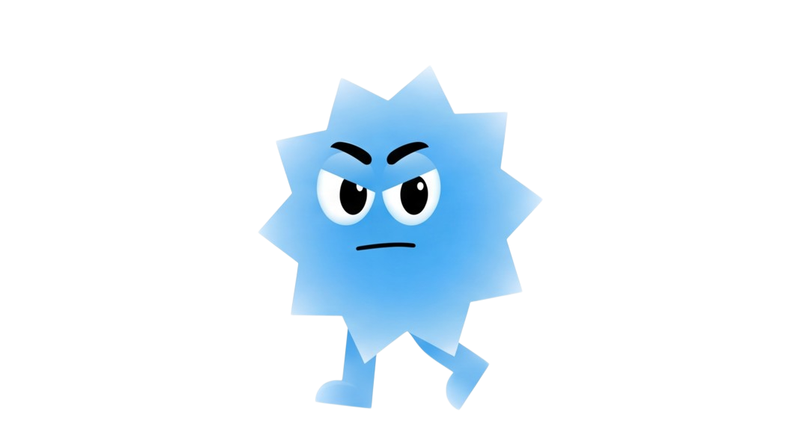
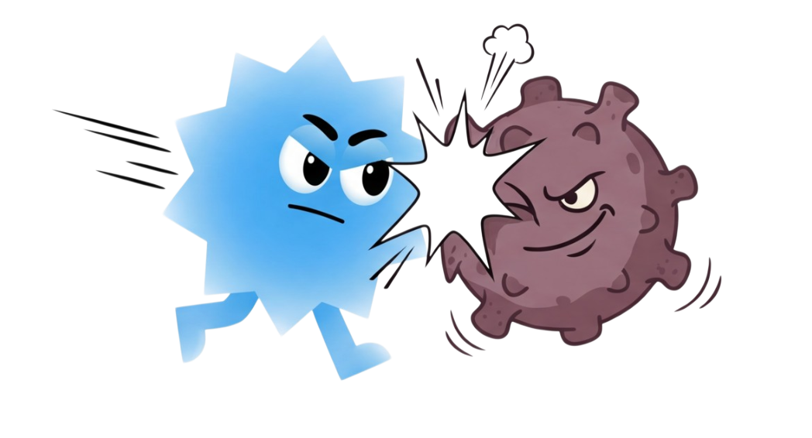

NK세포(Natural Killer Cell)는
선천면역을 담당하는 면역세포로,
바이러스 감염 세포나 암세포를
빠르게 인식해 직접 사멸시킵니다.
설계사 수수료 없는
알뜰보험




NK세포의 활성도가 떨어지면
암세포를 초기에 제거하지 못해
체내에서 암이 자랄 가능성이 높아집니다.
실제로 여러 연구에서 암 환자군은 정상군보다
NK세포 활성도가 낮게 나타났습니다.